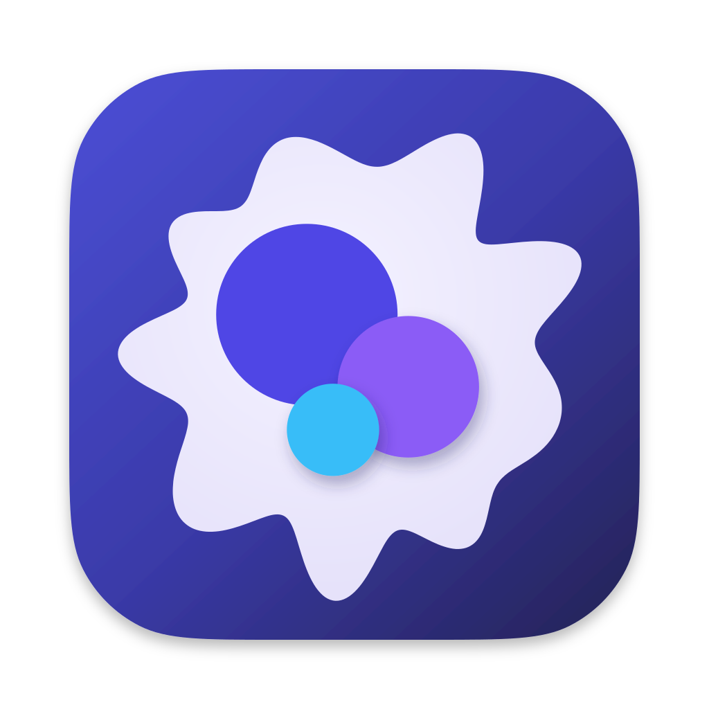

One mark for the macOS App, Windows installer, WebUI tab, PWA and docs site. macOS ships a flat icon.icns; AppIcon.icon holds the same artwork as Icon Composer layers.
| Element | Position (dx, dy) | Radius | Colour |
|---|---|---|---|
| Indigo disc, back | −0.084, −0.070 | 0.159 | #4F46E5 |
| Violet disc | +0.094, +0.057 | 0.124 | #8B5CF6, soft shadow |
| Sky disc, front | −0.038, +0.132 | 0.081 | #38BDF8, soft shadow |
| Cell | centred | 0.364 ± wave | radial #F4F2FF → #E6E2FA |
| Tile | full | full | linear #4B4FD6 → #3A3AA8 → #23214F |
Fractions of the tile side from its centre. Cell outline: r(θ) = R · (1 + Σ aₖ cos(kθ + φₖ)) rotated −15°, R = 0.364. Harmonics (k, a, φ): (9, 0.12, 1.3), (7, 0.05, 0.2), (12, 0.035, 2.4), (2, 0.02, 1.8). The 9th gives about nine uneven rounded rays; no cusps. Reaches at most 0.446.
| Target | Source | Output |
|---|---|---|
| macOS App | docs/images/openprogram-app-icon.svg: Big Sur grid, 824px tile at offset 100 on 1024, continuous corner (radius 185.4px, 60% smoothing), soft tile shadow | apps/desktop/build/icon.icns (16–1024px), packaging input in apps/desktop/package.json |
| Liquid Glass | apps/desktop/build/AppIcon.icon | Groups front to back: sky, violet, indigo, cell. Specular, translucency and glass off; neutral shadows (0.5 on front discs, 0.3 on the rest). ictool exports Default, Dark, ClearLight, TintedDark. |
| WebUI tab, docs site | docs/images/openprogram-tab-icon.source.svg, 64px tile filling the canvas | Copied to apps/web/app/icon.svg, scripts/docs_site/assets/mark.svg |
| Favicon, Windows installer | The 64px tab icon | apps/web/app/favicon.ico: 16, 32, 48, 64, 128, 256px |
| PWA | The 64px tab icon; a full-bleed variant for maskable | apps/web/public/icons/icon-192.png, icon-512.png, icon-512-maskable.png (cell inside the 80% safe circle) |
| README, website, social card | The mark at 126px beside the outlined Instrument Sans wordmark and Geist Mono tagline | docs/images/logo-lockup-dark.svg, logo-lockup-light.svg, PNG renders, GIFs with discs popping in back to front, logo.svg, openprogram-social-card.svg/.png. Image sources guide. |
npm run icon:checkapps/desktop/scripts/check-icon.sh: four layers, three flat discs in the approved colours, cell fill, gradient tile, group order, Specular, translucency and glass off. Rejects squircles, frames, filters, shadows, text and rasters in the layers._complete_icon_probeopenprogram/operations/self_update/control/supervisor.py: renders each layer with sips, requires a 1024 × 1024 transparent canvasFollows Apple's App icons HIG, Icon Composer and Electron Builder icons.